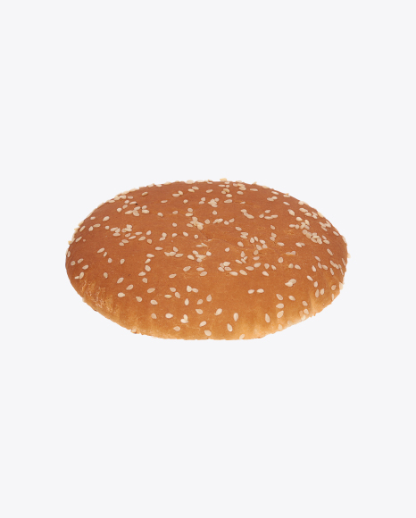
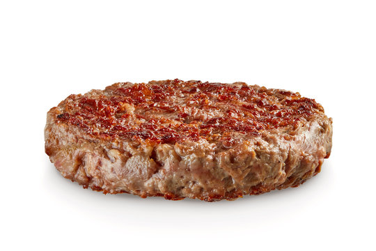

Obviously, Hello World is obligatory to any new thing we learn.
Please visit my github page if you would like to know more about me and hire me. no seriously. I need a job.
This webpage is to practice html coding skills learned from general web search and W3schools materials.
HTML is the standard markup language for Web pages. HTML is used to define structures and content of a web page.
CSS is for visuala presentation, such as colors, fonts, and positionings.
Javascript adds interactive behaviors, such as animations.
Due to very effective social engineering done by Mr. Stafford, my hunger was initiated while watching the instruction video. So I have decided to make a list of ingredients I would like for my burger.
I understand if this recipe looks psychotic. But I resonate with Swanson's burger over Traeger's burger.


Visit this scene for my recipe reference.
This web page is purely for study purposes and no animal was harmed from the trolling.